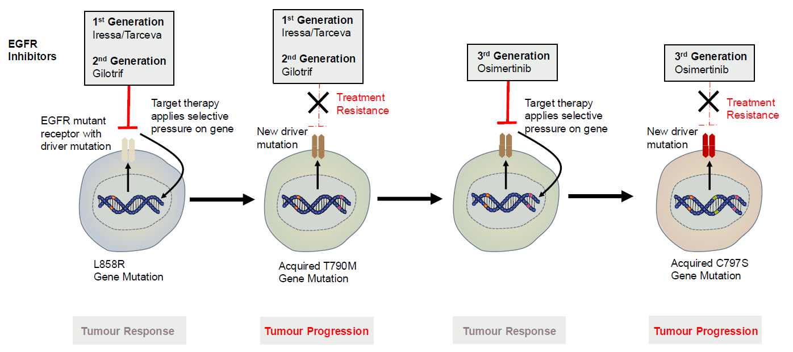
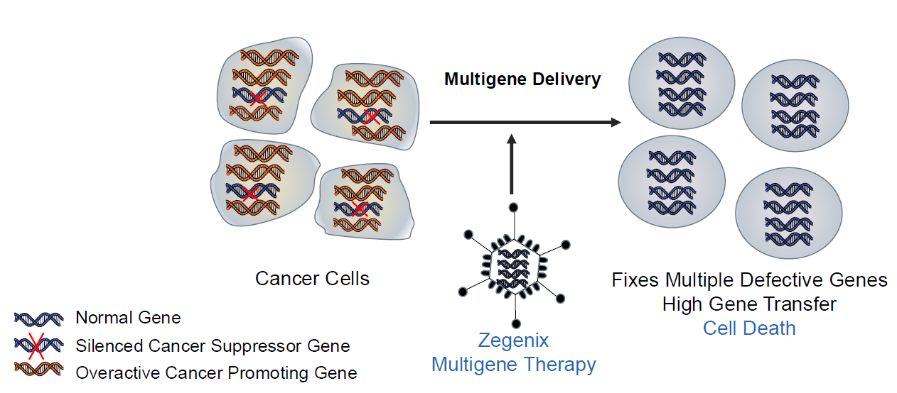

7月22日晚，由墨尔本中国高校校友会联盟（MCUAA）主办的专题讲座《生命医学与健康和长寿》成功举行。国际生物医药专家朱宏剑教授围绕生命科学发展历程、癌症分子机制、精准医学、人工智能赋能医疗、生物医药创新以及澳中生命科学合作等多个前沿领域展开系统阐述，结合国际生命科学最新进展与自身长期从事肿瘤分子医学和创新药物研发的实践经验，为现场校友带来了一场兼具科学深度与产业视野的高水平学术报告。
讲座开始前，墨尔本中国高校校友会联盟（MCUAA）主席范志良博士向与会嘉宾及听众详细介绍了主讲人朱宏剑教授。朱宏剑教授现任墨尔本大学医学院外科学系癌症信号实验室主任、荷兰莱顿大学 Boerhaave 讲席教授，同时担任九济华生医药科技研究院创始院长、Zegenix Australia 创始人以及澳洲华人生物医学协会（ACABS）会长。朱教授也是南京大学墨尔本校友会的前会长。
朱教授长期从事癌症生物学及细胞信号转导研究，自2006年起领导墨尔本大学癌症信号实验室，重点研究转化生长因子β（TGF-β）等信号通路在肿瘤发生、发展和转移中的分子机制，在癌症信号转导领域享有国际声誉。
朱教授已发表SCI论文100余篇，成果发表于包括《Cell》《Nature Medicine》《Nature Communications》等国际顶级期刊, H指数49，总引用超过12,000次。作为首席研究员，累计获得超过1,200万澳元竞争性科研经费资助，其中包括7项澳大利亚国家健康与医学研究委员会（NHMRC）项目资助, 朱教授担任这个委员会专家评审委员会委员，并25次受邀在国际学术会议作大会报告。
除了在基础研究与临床成果转化方面的卓越建树，朱教授亦长期致力于推动中澳两国在生物医药领域的科技交流与深层合作。
回望生命科学发展历程 夯实现代医学理论基础
讲座伊始，朱宏剑教授从生命演化的宏观视角切入，回顾了现代生命科学的发展历程。他指出，人类对于生命本质的认识经历了漫长的发展过程，从解剖学的建立，到细胞学说的提出，再到遗传学和分子生物学的发展，每一次重大科学突破都极大推动了医学的进步。
朱教授首先介绍了遗传学的发展基础。他通过家族遗传实例，深入浅出地说明了染色体遗传规律，特别是X染色体遗传特点，以及遗传重组在生命演化中的重要意义。他表示，人类复杂遗传特征的形成，既遵循基本遗传规律，又受到基因重组、环境以及自然选择等多重因素共同影响，这也是现代遗传医学不断发展的理论基础。
随后，朱教授回顾了现代分子生物学的重要里程碑。他介绍，1953年DNA双螺旋结构的发现开启了现代分子生物学时代，人类第一次真正理解遗传信息的物质基础。此后，随着基因测序技术、人类基因组计划以及高通量生物技术的发展，人类对于生命活动的认识逐渐从器官和组织水平深入到细胞、分子乃至基因网络层面，为精准医学的发展奠定了重要基础。
谈及生命科学的发展历程，朱教授还介绍了嗅觉受体研究获得诺贝尔生理学或医学奖的重要意义。他指出，人类能够识别成千上万种不同气味，并非依赖某一种受体，而是依靠数百种嗅觉受体形成复杂的组合编码系统。这一研究不仅深化了人们对于神经系统信息处理机制的理解，也体现了现代生命科学正在不断揭示生命系统高度复杂而精密的运行规律。
聚焦健康长寿 深入解析现代医学发展趋势
在介绍生命科学基础研究进展的同时，朱教授还引用经济合作与发展组织（OECD）公布的数据，对全球医疗卫生投入进行了分析。他指出，不同国家医疗支出水平存在较大差异，但医疗投入与居民健康水平之间并非简单线性关系，医疗体系效率、公共卫生政策、健康管理以及科技创新等因素共同决定了一个国家整体健康水平。这些数据反映出未来医学不仅需要不断发展先进治疗技术，同时也需要更加重视疾病预防、健康管理以及全民健康促进。
围绕人口老龄化这一全球共同面临的重要挑战，朱教授指出，随着医疗技术不断进步，人类平均寿命持续延长，但如何实现“健康长寿（Healthy Longevity）”，使人们不仅活得更久，而且活得更健康、更有生活质量，已经成为当前国际生命医学研究的重要方向。他认为，未来医学的发展目标将逐渐由“治疗疾病”向“维护健康”延伸，更加强调疾病预防、精准干预以及健康寿命的提升。
解读癌症分子机制 系统梳理精准医学发展脉络
随后，讲座进入癌症研究专题。朱教授首先结合国际公开数据介绍了全球癌症负担的发展趋势。他指出，癌症仍然是影响人类健康的重要疾病之一，随着人口老龄化不断加剧，癌症防治仍将长期成为全球医学研究的重要课题。
在回顾现代癌症研究的发展过程中，朱教授系统介绍了国际肿瘤分子生物学的重要进展。他指出，过去几十年来，随着分子生物学的发展，科学界逐步认识到癌症本质上是一类基因异常不断积累所导致的复杂疾病。正常细胞在长期演化过程中形成了严密的信号调控网络，当这些调控网络受到基因突变影响时，细胞便可能逐渐失去正常生长控制能力，最终形成肿瘤。
结合近年来国际研究成果，朱教授重点介绍了受体酪氨酸激酶（RTK）、RAS、PI3K、MAPK、Wnt、TGF-β、p53等多个经典细胞信号通路在肿瘤发生发展中的重要作用。他表示，目前国际癌症研究已经由过去关注单个基因，逐渐发展到更加关注复杂信号网络之间的相互作用，这也是现代系统生物学不断发展的重要体现。
围绕精准医学的发展，朱教授回顾了国际靶向治疗取得的重要成果。他介绍了HER2、BCR-ABL、EGFR等经典分子靶点，以及Herceptin、Gleevec、Iressa、Keytruda等代表性创新药物的发展历程。这些药物均建立在国际科研人员长期基础研究和临床研究成果之上，标志着现代癌症治疗逐步进入精准医疗时代，使部分患者获得了明显改善的治疗效果。

与此同时，朱教授指出，国际医学界普遍面临肿瘤耐药这一重大挑战。随着治疗持续进行，癌细胞可能不断产生新的遗传改变，从而逐渐降低药物疗效。例如EGFR突变患者在接受靶向治疗过程中，可能出现T790M、C797S等新的耐药突变，这也是全球癌症研究持续关注的重要科学问题。
分享团队研究成果 探索多基因治疗新路径
在系统介绍国际癌症研究现状之后，朱教授进一步分享了团队近年来围绕肿瘤耐药及多基因治疗开展的研究工作。他表示，传统精准治疗通常针对单一驱动基因，而越来越多研究表明，肿瘤的发展往往涉及多个基因和多个信号通路共同参与，仅依赖单一靶点治疗难以完全解决复杂疾病问题。
基于这一认识，朱教授介绍了团队着力于多基因协同治疗（Multigene Therapy）研究理念，希望通过同时调控多个关键基因网络，提高治疗效果，并降低耐药发生风险。他强调，目前相关研究仍在持续推进，希望未来能够为复杂疾病治疗提供新的技术路径。

随后，朱教授介绍了团队近年来围绕这一理念开展的一系列技术平台建设，包括多基因治疗平台、信号转换平台、病毒载体平台以及相关基因治疗技术等。他表示，这些平台的建设目标是探索更加高效、安全的基因递送与治疗策略，为未来精准医学发展提供更多可能性。
围绕生命科学创新成果向临床转化的问题，朱教授还介绍了近年来国际生物医药产业的发展趋势。他指出，近年来全球创新药物研发不断加快，中国生物医药产业创新能力持续提升，与国际制药企业之间的合作不断深化，越来越多具有自主知识产权的新技术、新药物进入国际合作与临床开发阶段。这不仅体现了中国生命科学整体创新能力的不断增强，也为国际科技合作提供了新的机遇。
展望人工智能医疗前景 科技赋能未来健康
在人工智能迅速发展的背景下，朱教授还专题介绍了AI在医学领域的发展现状。他引用近期发表于《Nature Medicine》等国际学术期刊的研究成果指出，大语言模型等人工智能技术已经在部分医学知识测试和辅助分析任务中展现出较高水平，为未来医疗辅助决策提供了新的技术手段。
同时，他也引用相关评论文章指出，人工智能真正进入临床实践仍需经过严格的循证医学验证和长期临床评价。未来AI更有可能作为医生的重要辅助工具，提高医疗效率、优化诊疗流程，而不是简单替代医生的专业判断。
围绕未来医学的发展趋势，朱教授认为，人工智能、生物信息学、高通量组学、大数据分析以及精准医学将进一步深度融合，推动生命科学不断进入新的发展阶段。随着多学科交叉不断深化，未来疾病诊断将更加精准，药物研发效率将不断提升，个体化医疗和健康管理也将迎来新的发展机遇。
展望澳中合作前景 共促生命健康创新发展
讲座最后，朱教授结合自身长期从事国际科研合作的经历，介绍了澳大利亚与中国在生命科学领域开展合作的广阔前景。他表示，澳大利亚拥有世界领先的基础医学研究体系、规范完善的临床研究平台以及成熟的药物监管体系，中国则具有完善的产业体系、快速发展的创新能力和广阔的应用市场。双方在生命科学、生物医药、精准医疗以及人工智能医疗等领域具有较强互补优势，未来合作空间十分广阔。
他认为，加强科研机构、高校、医院以及企业之间的交流合作，将有助于推动科研成果转化，加快创新药物研发，共同促进生命健康产业高质量发展，为应对人口老龄化、重大疾病防治以及健康长寿等全球共同挑战贡献更多智慧和力量。
共话生命科学前沿 激发科技创新思考
讲座结束后，在MCUAA理事、天津大学墨尔本校友会会长刘莘的主持下，现场进入互动交流环节。与会听众围绕中国创新药商业化路径与国际合作模式、基因毒性研究在创新药研发中的作用，以及医药与医学科研人才应具备的专业素养和创新能力等话题踊跃提问，与朱教授展开了深入交流与探讨。朱教授结合自身多年科研和产业实践经验，逐一进行了细致解答，现场讨论气氛热烈。
与会校友纷纷表示，本次讲座内容丰富、视野开阔，不仅系统梳理了现代生命科学的发展历程和国际医学研究前沿，也进一步加深了大家对精准医学、人工智能医疗及生物医药创新发展的理解，更深刻认识到科技创新在促进健康长寿、提升人类福祉中的重要作用。大家期待MCUAA今后继续依托高校校友资源优势，举办更多高水平学术交流活动，搭建跨学科、跨行业、跨领域的交流合作平台，促进科技创新、人才交流与国际合作，为服务校友、服务社区、推动中澳科技交流作出更大贡献。